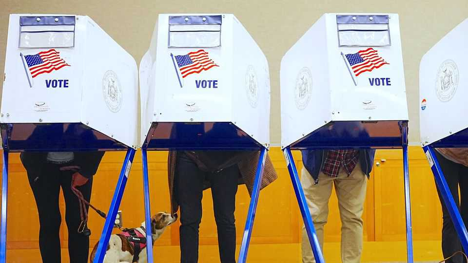
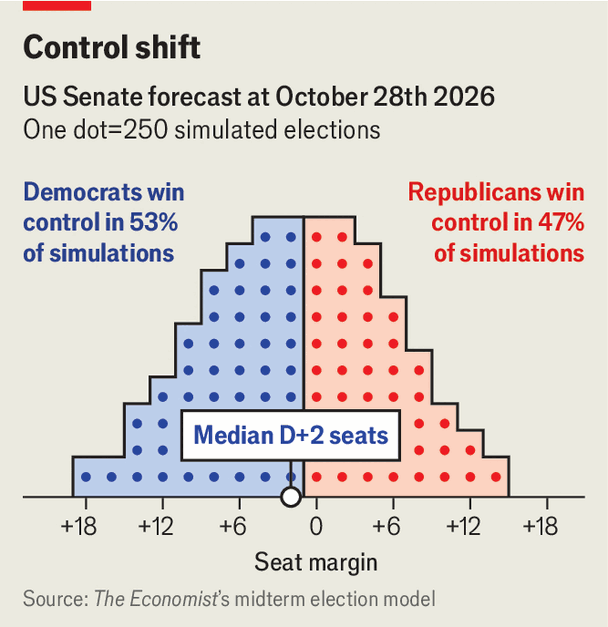

Our forecast of the midterms’ outcome
The auguries are good for Democrats

Oct 29th 2026
WHEN AN UNSTOPPABLE force meets an immovable object, one or the other has to give. For most of Donald Trump’s second term, pundits have assumed that the object, Republicans’ seemingly impregnable Senate map, had the edge over the force, Democrats’ lead in national polls. Last year Sabato’s Crystal Ball, a leading forecasting outfit, called Republicans “strong favourites” to hold their Senate majority, and classified Alaska, Iowa and Kansas as “safe” red seats. As late as this June, the group still found enough races at least “leaning” towards Republicans for the party to control the chamber.
Now, with midterm elections less than a week away, conventional wisdom holds that the force has claimed the upper hand. Crystal Ball’s latest update says Democrats “have a slight advantage in the battle for the Senate”, while betting markets make the party a 67% favourite to flip the chamber. Nate Silver, America’s most prominent quantitative election forecaster, gives Democrats a 76% chance. But The Economist’s own prediction model is more cautious, putting the probability of the Senate changing hands at just 54%.

The main source of this disagreement is our model’s intentional breach of a common forecasting maxim: thou shalt not attempt to predict the direction of polling errors. Although “generic-ballot” surveys, which ask respondents which party they plan to support for Congress, have an impressive record of accuracy, they also have a marked tendency to overshoot: wave elections usually prove less towering than advertised. On the eve of the 2006 midterms, for example, Democrats led these surveys by 13 percentage points on average, while their final margin in the national House vote was a mere seven. And when national polls misfire, that error usually appears in state-specific surveys as well.
This year’s Democratic advantage, at around 8.5 points on the generic ballot, is less extreme than that of 2006. Nonetheless, based on history, our model projects that polls across the country will overestimate the party’s margin by around a point. This gap is smaller in historically Democratic states, but larger in Republican ones—and to control the Senate, Democrats need to win at least two states that Mr Trump won by double digits in 2024.
Another potential factor is fundraising. Overall, Democratic Senate candidates have received far more in contributions from individual donors (which are capped at $3,500) in their states than their opponents have. Many forecasts weight this heavily. However, Democratic Senate nominees as a group have also out-raised Republicans in this category in every other election since Mr Trump’s first inauguration. This has not translated into poll-beating electoral performances. As a result, our model compares each candidate’s fundraising to their own party’s average. This helps Republicans’ prospects in states like Iowa, where we reward their nominee for eking out a narrow financial advantage.
Relative to the consensus, our model is most pessimistic about Democratic hopes in Alaska. Betting markets make Mary Peltola a 69% favourite over Dan Sullivan, the Republican incumbent, whereas we show a 51-49 race favouring Mr Sullivan. And Ms Peltola may yet suffer from allegations that her team planted spoiler candidates on the ballot, a controversy that is likely to dominate the final week of campaigning.
Nonetheless, our model still clearly favours Democrats in enough states—including Maine, Michigan, North Carolina and Ohio—to win 50 Senate seats. It gives them even odds in two more (Alaska and Texas) that could be the majority-making 51st seat. Importantly, our model gives Democrats a 95% chance of gaining control of the House of Representatives, which would allow them to reject Mr Trump’s agenda and to launch investigations of his administration. Winning the Senate would enable them to block his judicial nominees as well.
The makeup of the Senate, where terms are six years, will also strongly influence whether Mr Trump’s successor, who will be elected in two, can implement a partisan agenda. Looking beyond 2028, Democrats’ 52nd seat could matter just as much as their 51st. And they currently have a plausible path to winning considerably more than 52 seats. Their candidates are neck-and-neck in polls of Kansas, Iowa and even South Carolina, where Lindsey Graham, a longtime Republican incumbent, died in July and was replaced by his sister Darline, a political novice. On October 28th the New York Times and Siena College, America’s most prominent team of pollsters, reported a tied race in South Carolina, where Mr Trump won by 18 points two years ago.
Democrats are modest underdogs in all these states. However, if even one of these dominoes falls, they may well have benefited from a nationwide polling error, raising the odds that the others fall too. Should Dan Osborn, a Nebraska independent who vowed not to caucus with either party if elected, join Democrats instead, we give the party a 15% chance of holding at least 55 seats. Even in 2006, when the generic ballot vastly overstated the Democratic advantage, the party still managed to flip six Senate seats and secure a majority. ■
Stay on top of American politics with The US in brief, our daily newsletter with fast analysis of the most important political news, and Checks and Balance, a weekly note that examines the state of American democracy and the issues that matter to voters.